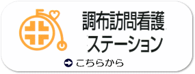
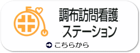

最終更新日 平成28年5月1日
調布病院では、二次救急指定病院として２４時間救急受付けをはじめ、出張健診活動を行っております。
 


- 2016年05月01日 外来診療担当医師一覧表を更新しました。
- 2016年03月30日 外来診療担当医師一覧表を更新しました。
- 休診・代診のお知らせ
3月18日（金）は午前・午後共に、内科を休診とさせていただきます。 - 休診・代診のお知らせ
4月26日（火）午前 脳神経外科 鳥居医師：休診 → 代診：猿田医師 - 2016年02月01日 外来診療担当医師一覧表を更新しました。
- 2016年01月15日 広報誌「桐」２０号を発行しました。
- 2015年12月22日 年末年始休診のお知らせ
12月30日から1月3日まで休診とさせていただきます。
新年は1月4日より通常通り診療致します。
休診期間中はお問い合わせの返信も停止とさせていただきます。
何卒、御理解の程、宜しく御願い致します。 - 2015年12月22日 産科・婦人科の特設ページができました。

- 2015年11月30日 外来診療担当医師一覧表を更新しました。
- 2015年09月30日 外来診療担当医師一覧表を更新しました。
- 2015年09月29日 10月1日より外来受付が通常に戻ります。外来受付時間に変更があります。
午前 8：20〜12：30 午後 13：30〜16：00（内科・外科・産科・婦人科のみ）
土曜は午前のみ 日祝日は休診 - 2015年08月01日 外来診療担当医師一覧表を更新しました。
- 2015年07月01日 外来診療担当医師一覧表を更新しました。
- 2015年06月04日 禁煙外来を開始しました。
禁煙外来を開始しました。
診察は金曜午後のみ。電話予約も可能です。
是非ご利用ください。 - 2015年05月29日 6月1日よりサマータイム制を導入致します。外来受付時間に変更があります。
午前 8：00〜12：00 午後 13：00〜15：30（内科・外科・産科・婦人科のみ）
土曜は午前のみ 日祝日は休診 - 2015年05月15日 外来診療担当医師一覧表を更新しました。
- 2015年04月02日 外来診療担当医師一覧表を更新しました。
- 2015年03月20日 MRI（磁気共鳴コンピューター断層撮影）装置の入れ替え工事を行います。
平成27年3月21日〜5月下旬の間でＭＲＩ装置の入れ替え工事を行います。
工事期間中はＭＲＩによる撮影ができなくなります。
患者様、関係者の方々にはご迷惑をお掛け致しますが、
何卒、ご理解とご協力の程、宜しく御願い致します。 - 2015年02月09日 脳神経外科で「物忘れ外来」を開始します
2月より脳神経外科が午後の外来診療を開始しました。
それに伴い、午後の脳神経外科外来診療内で「物忘れ外来」を行うことになりました。
是非ご利用ください。 - 2015年02月02日 外来診療担当医師一覧表を更新しました。
- 2015年01月08日 水曜午後内科休診のお知らせ
1月14日から3月末日（予定）まで水曜午後は内科を休診とさせていただきます。
何卒、御理解の程、宜しく御願い致します。 - 2015年01月05日 外来診療担当医師一覧表を更新しました。
- 2014年12月26日 年末年始休診のお知らせ
12月30日から1月4日まで休診とさせていただきます。
新年は1月5日より通常通り診療致します。
何卒、御理解の程、宜しく御願い致します。 - 2014年10月01日 外来診療担当医師一覧表を更新しました。
- 2014年09月30日 10月1日より外来受付が通常に戻ります。外来受付時間に変更があります。
午前 8：20〜12：30 午後 13：30〜16：00（内科・外科・産科・婦人科のみ）
土曜は午前のみ 日祝日は休診 - 2014年07月01日 外来診療担当医師一覧表を更新しました。
- 2014年06月12日 初診、再診にかかわらず、全科でご予約ができるようになりました。
（ご予約なしでも診察できます）
予約受付時間 月〜金（祝日を除く） 9:00〜16：00
予約電話番号 042-484-2626（代） - 2014年05月31日 6月1日よりサマータイム制を導入致します。外来受付時間に変更があります。
午前 8：00〜12：00 午後 13：00〜15：30（内科・外科・産科・婦人科のみ）
土曜は午前のみ 日祝日は休診 - 2014年04月01日 外来診療担当医師一覧表を更新しました。
- 2013年10月30日 外来診療担当医師一覧表を更新しました。
- 2013年10月01日 外来診療担当医師一覧表を更新しました。
- 2013年09月30日 10月1日より外来受付が通常に戻ります。外来受付時間に変更があります。
午前 8：20〜12：30 午後 13：30〜16：00（内科・外科・産科・婦人科のみ）
土曜は午前のみ 日祝日は休診 - 2013年06月29日 外来診療担当医師一覧表を更新しました。
- 2013年05月31日 6月1日よりサマータイム制を導入致します。外来受付時間に変更があります。
午前 8：00〜12：00 午後 13：00〜15：30（内科・外科・産科・婦人科のみ）
土曜は午前のみ 日祝日は休診 - 2013年05月31日 外来診療担当医師一覧表を更新しました。
- 2013年05月20日 産婦人科の初診、再診のご予約が電話でできるようになりました。
ぜひご利用ください。
予約受付時間 月〜金（祝日を除く） 9:00〜16：00
予約電話番号 042-484-2626（代） - 2013年05月01日 ボランティアを募集しています。
- 2013年04月26日 助産師外来を開設しました。
- 2013年04月16日 外来診療担当医師一覧表を更新しました。
- 2012年11月27日 広報誌「桐」１８号を発行しました。
- 2012年09月29日 10月1日より外来受付が通常に戻ります。外来受付時間に変更があります。
午前 8：20〜12：30 午後 13：30〜16：00（内科・外科・産科・婦人科のみ）
土曜は午前のみ 日祝日は休診 - 2012年07月13日 栄養教室を開催します。（認知症を予防する食事療法について）
日時：2012年8月25日（土） 午後1時〜午後2時
参加費：100円（資料代）
申込み：調布病院栄養科 042-484-2626 内線700 - 2012年07月01日 最新鋭の128スライスＣＴと骨密度測定装置を導入しました。
医療関係者様はこちらをご覧ください。 - 2012年04月01日 別棟が完成し、産婦人科が別棟1階に移動しました。
- 2012年04月01日 4月1日付で、院長に山田亜矢が就任いたしました。
- 2011年06月03日 2011年6月3日付で病院機能評価Ver.6.0の認定を受けました。
- 再来受付機を導入しました。
- 外来に待ち番号表示ディスプレイを導入しました。
- 全科予約（再診のみ）制となりました。
- 救急車専用口と救急初療室（ＥＲ）を増築しました。
- 産科・婦人科は、医師・助産師・看護師全て女性スタッフで運営しています。
- 東京都脳卒中急性期医療機関として認定されました。